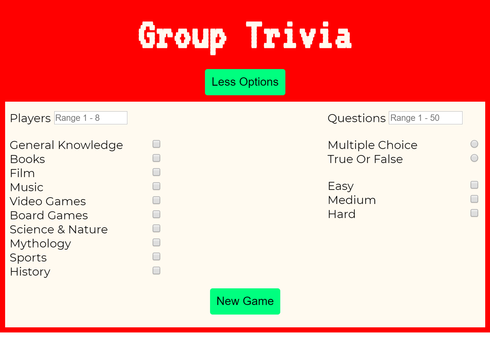

About
Originally from the great and beautiful state of Minnesota, I gathered my belongings in the summer of 2017 and migrated to my current city of Phoenix, AZ. While transitioning to my new life in the desert, I discovered a newfound love of web development and computer programming, which quickly led me to enroll in a web development bootcamp. I have since developed a deep admiration for air conditioning, cactuses (cacti?), and dodgerblue.
When I'm not building web apps, I spend my time hanging with friends, attempting to cook, and making music.
I am familiar with JavaScript, HTML, CSS, React, JQuery, MongoDB... and some Java too!
Projects
Cloud Poetry
Cloud Poetry is an app designed for people who are interested in creating and sharing poetry. I was inspired to create this app because I love the way poetry allows one to express themself, and I think facilitating such expression is cool.
Uses JavaScript, React, node.js, Express, and MongoDB
Reflect
The 'Reflect' web app is a journal-like app that provides the user with a personal journal they can use to reflect upon their day. I created this because I think there are a lot of benefits one can get by reflecting on their day.
Uses html, css, JavaScript, JQuery, Node.js, Express, and MongoDB
Group Trivia
Group Trivia is an app for playing trivia with friends and family. I built this app because I believe technology at its best brings people closer together, and I wanted to create something that did just that.
Uses html, css, JQuery, JavaScript and APIs from OpenTDB and Wikipedia
Contact
I can be reached by
- Phone: 651-788-3606
- Email: walke954@umn.edu
- Or LinkedIn
Or check out my Github